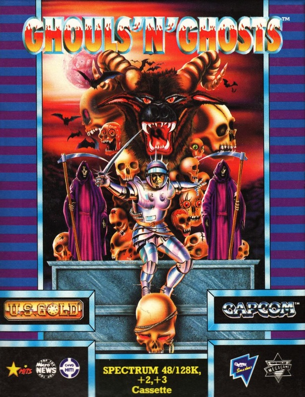
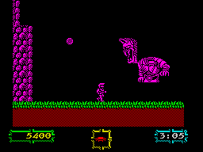

Ghouls 'N' Ghosts


{kind=link}

| Publisher: | Capcom |
| Price: | £8.99 Cass, £14.99 Disk |
| Year: | 1989 |
| Source: | CRASH, Issue 71 |

Well, this is just fine isn’t it? Giving me, who goes all wibbly at the sight of blood, a spooky Zombie-infested game like this. But wait, it isn’t horrid at all! No! Why, ’tis indeed a triff ’n’ brill bouncing platform game! (A nation cheers!) — (Stop the drama, get on with it!! — Ed.)
Right, here we are in the (spook!) graveyard. The chap standing here is Arthur, hero of this adventurous jaunt. A beefy kinds knight, kitted out in shiny armour. Trouble is that his soon-to-be-wife, the Princess, has been swiped by a mean ol’ demon — just on the verge of them having rumpo too!

So, with lance in hand, Arthur lunges into the scroiling landscape on a quest to rescue his beloved.
And here come the spooks! Zombies rise from the ground, and touching one could seriously damage Arthur, though not kill him outright. No, he just goes flickery for a while and loses his armour, leaving only his boxer shorts intact (Brrrrr!).
Should he get caught up with another ghoulie, he’s reduced to a pile of bones. Eeek! Fortunately, Arthur comes equipped with three lives. Bravo!
In the graveyard there are ladders to climb up walls, trees where vultures sit swooping down for the kill when you’re near enough, and heaps of different scenery, all displayed with very detailed and well drawn graphics.
Along the way new weapons appear. There’s the fire bomb which flies through the air and when it hits the ground, sets the surrounding area on fire burning the undead. There’s the axe which zooms off in a diagonally upward direction when thrown (bit rubbish really), and the little dagger: this looks really tiny and rubbish but it’s fast and deadly. Just the job. And you can fire in all four directions.
Magic chests appear at certain points throughout; from these may spring a magician who turns you into a duck, or more weapons, or mega-armour. Somehow I just got magicians. Hurmph!
The further you progress through the five sections, the odder and harder gameplay becomes. After the graveyard you enter a ruined city where the screen scrolls both along and up.
In level three you fly up a ruined tower on a magic carpet fending off flying ghosts. Next, it’s off to the skeleton caves where the bones of megalithic creatures make up the scenery, and the final level takes place in the enemy castle where the action often becomes too hot to handle! At the end of each level is a huge monster, and they’re all deadly!
Ghouls ’n’ Ghosts is a thoroughly packed program with amazing quantities of playability. Mind you, it’s ruddy annoying when, after leaping and running through most of a section, you die and have to start from the beginning again! Arrrhg! But you get loads of continue credits which allow you start at the level you died on, and with your most recently collected weapon intact.
Graphics remain at a very high standard throughout, as does the superbly smooth scrolling scenery. Smashing music and great sound FX accompany the action on the 128Ks. You’ll be playing Ghouls ’n’ Ghosts well into next year, it really is THE platform shoot ’em up to go for, and a brilliant conversion to boot! This game is coming home with me! Hurrah! (This is what I call OTT — Ed.)
Three years (game time) after the original Ghosts ’n’ Goblins story, King Arthur finds that his loved one has been kidnapped yet again by a big ugly, (no not me). Ghouls ’n’ Ghosts follows in the same vein as Ghosts. Arthur runs around the beautifully detailed scenery lobbing a range of offensive weaponry at the myriad of ugly mothers who would love nothing more than to reduce you to running around in your undies (if you don’t believe us, play the game). I only have two slight niggles: the yellow character sprites are impossible to see on yellow backgrounds, and you’re sent back to the beginning of the current level. Apart from that Ghouls ’n’ Ghosts is a brilliant conversion of a very good coin op. Now go rescue that princess.
MARK — 92%
RATING
A stunningly executed conversion, with great scrolling routines and a very, very very playable game to boot!
| Presentation: | 91% |
| Graphics: | 88% |
| Sound: | 84% |
| Playability: | 93% |
| Addictivity: | 91% |
| Overall: | 92% |